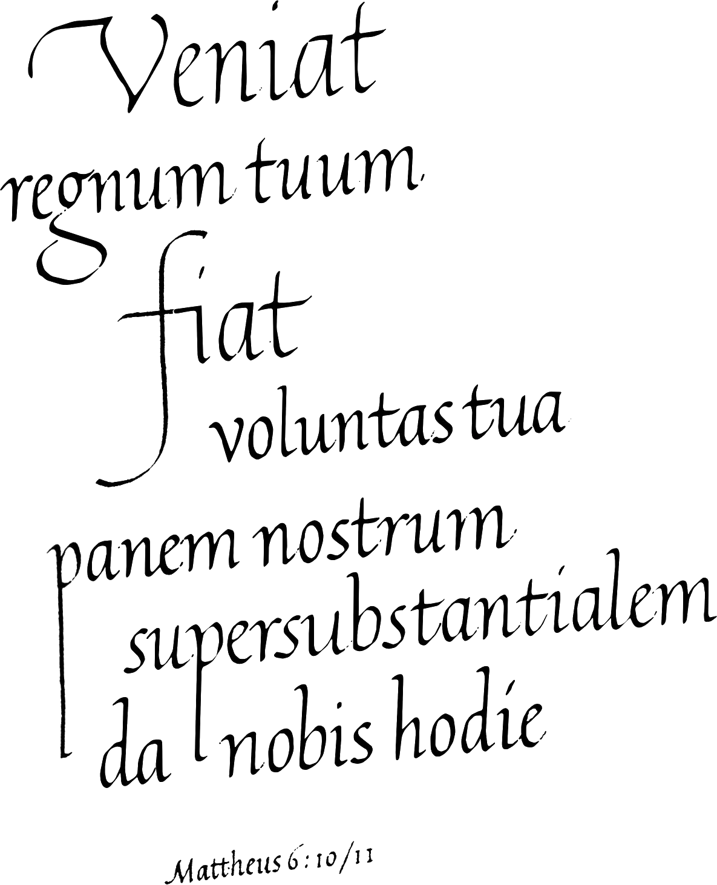
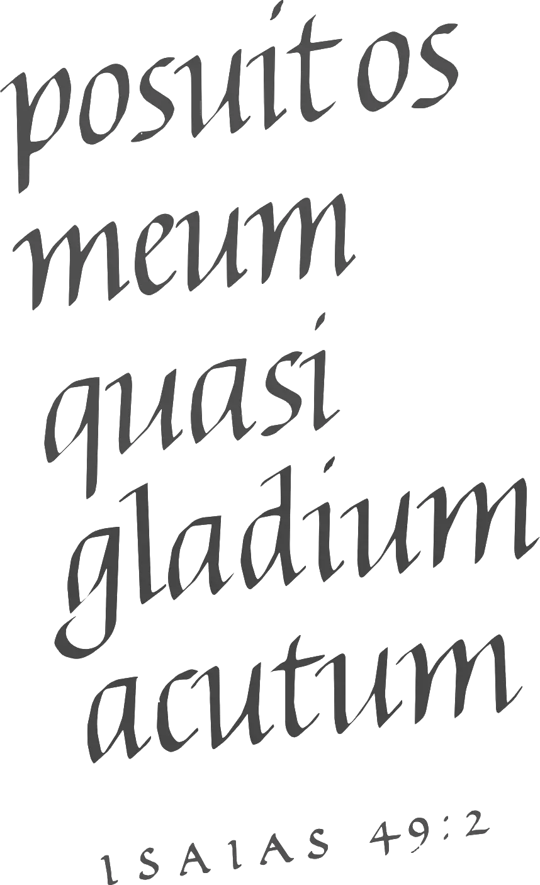

Technique
To be able to analyse writing I need to write and to be able to write I need the analysis. This circle-game is not played in the study, but rather in the workshop. Everything I have to say presupposes technique, but the story ofpens, pencils, paint, ink, paper, and parchment has no place here. I have sought a counterweight to the abstractions of this book in the realism of the illustrations. They are not retouched and all the reproductions are at actual size. For the transparent strokes I have used brushes with synthetic hair. All other illustrations were made with steel pens. The ink is Chinese stick ink and for paper I have used various kinds of book stock. Because this paper has the sizing needed for offset printing, it lends itself to handwriting better than so-called writing stock. I have written the strokes with a speed of approximately one centimetre per second.
In western education the habit of immobilizing the wrist by setting it down while writing has crept in, and then directing the pen with movements of the tenor so finger-joints involved. I would never be able to master the stroke in this manner and I have yet to see someone who could. If something does come of it then it is in any case still impossible to make large strokes in this way. I write all my letters, big or small, in the same way. The fingers are virtually at rest relative to the wrist, the angle between the shaft of the pen and the writing surface is constant and the whole arm is in motion. This motion is barely visible when writing a small hand, but I can clearly make out the movement of the muscles of the upper arm if I place a finger on my arm under the shoulder-joint. The text of Matthew 6:10-11, for example, is written in its entirety using this pattern of movement, the long stems as well as the small letters.
I have scattered Latin biblical passages through the book as free-standing examples of various kinds of writing with various types of contrast and constructions. Because they have no direct connection with the text, they fall outside the chapter-related numbering of the actual illustrations. The passages are taken from the mediaeval Vulgate (the Stutt gart critical edition), but I have identified the locations ac cording to the Dutch Calvinist tradition. I have made use of the Vulgate because 1 think that western writing came in to its own in this book. The rhythmic word-image exercised great influence on the letters involved. The letters that ap pear together most frequently thus also fit together the best. The frequency of letters is however determined by rules of spelling. In the middle ages no other text is written as often as that of the Vulgate, which allows me to assume that the frequency of the letters and letter combinations of this work constitute the ideal milieu for our mediaeval styles of writing. Letters that are scarce in the Vulgate (such as the y) or letters that are completely absent (such as the y) perhaps do damage to the word image. If this is so, then we should reject any change in spelling that attenuates the discrepancy between frequency of letters and the letter frequency of the Vulgate. In Dutch spelling the frequency of thej is, according to this standard, too high. That this is the case, is supported by the well-known phenomenon that any typeface looks better in Latin than in any other language. In this typographic example the black of the letters remains the same, but the quality varies. Typographic quality is dependent on the white of the word, and that is the point of departure of this theory of writing.
